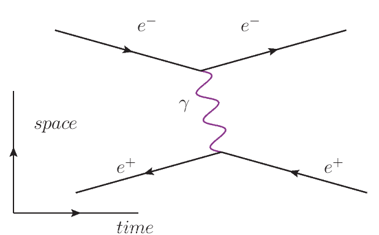
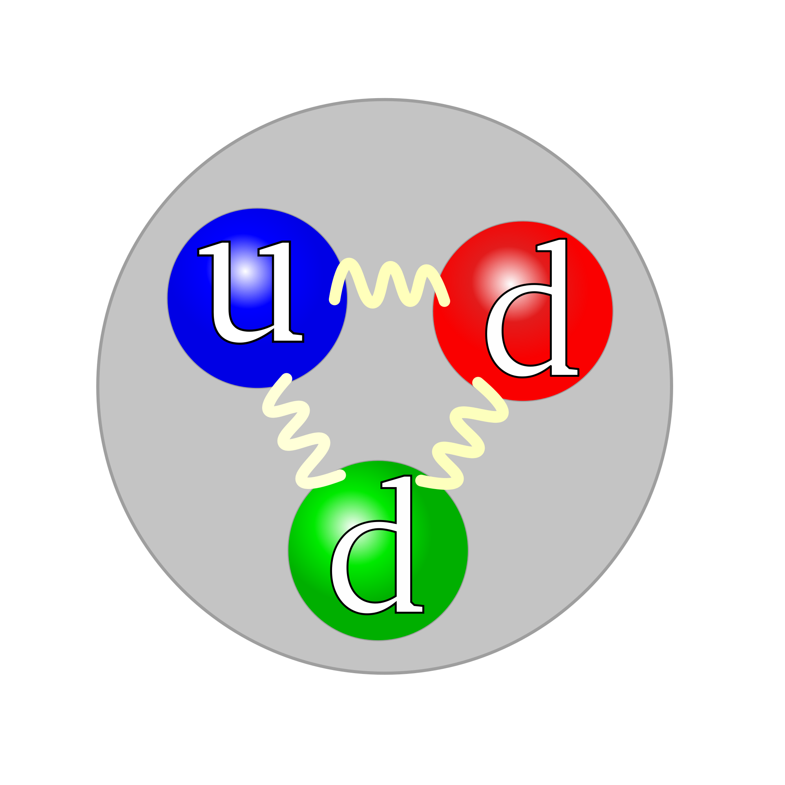
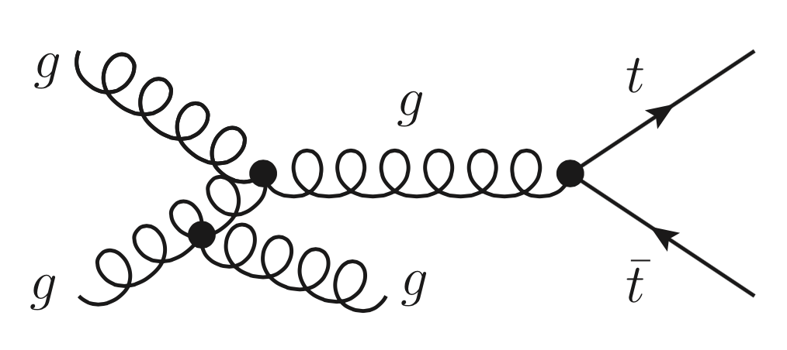
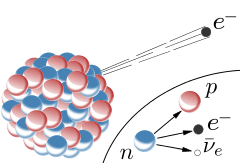
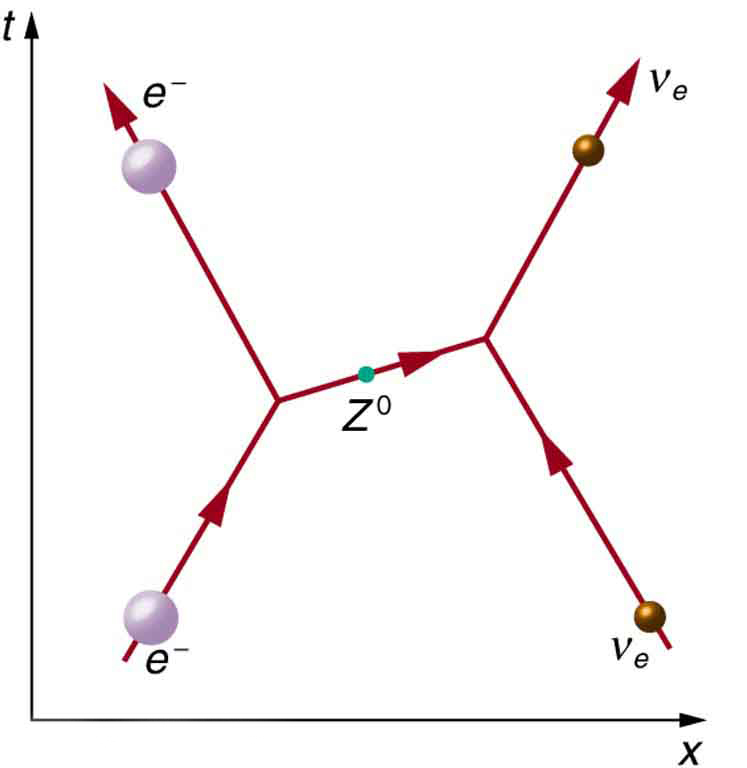

Quantum Electrodynamics (QED) is the quantum theory of the electromagnetic interaction. It was developed by many leading physicists of the mid twentieth century, including Nobel Laureate and well-known character Richard Feynman, pictured below.
The symmetry associated with QED is a local U(1) symmetry[1]. This represents the fact that if the wavefunction of a given particle is multiplied by a complex number of modulus unity and a space-time dependent phase, then the physics is unchanged. However, this is only true if a field is introduced to compensate for the space-time dependence of the transformation. In the case of the U(1) symmetry, only one field is required and this is the electromagnetic field. The mathematical details also describe how this field interacts and this leads to the full theory of QED, within which the field becomes quantised and electromagnetic interactions are described by the exchange of virtual photons. These interactions are displayed in Feynman diagrams, an example of which is shown in figure 1 below. To learn more about the meaning of this diagram, begin with the wikipedia page for the Feynman diagram here.
The special thing about U(1) transformations is that the order in which they are carried out does not matter. In mathematical terms this means that the U(1) group is abelian. This makes the dynamics of this field inherently simpler than would be the case for a non-abelian group. The most important effect associated with this is the fact that photons do not interact with each other[1] which allows the electromagnetic force to have infinite range, as observed in nature.
Quantum Chromodynamics is the quantum theory describing the strong interaction. It is this interaction which is responsible for binding together quarks into composite hadronic particles and in turn binding together nuclei. The development of this theory was motivated by the inconsistency of the existence of the Δ++ baryon, which was believed to contain three up quarks with parallel spins[2]. Another quantum number was needed to prevent violation of the Pauli exclusion principle and was given the name "colour".
It was then proposed that there are three kinds of colour, namely red, blue and green, with particles such as the neutron above consisting of combinations of coloured quarks. Furthermore, the strong interaction should not be dependent on the colour that a particular state has. There is then a symmetry associated with this colour property which is described mathematically by a local SU(3) symmetry. Just as in QED, for this local symmetry to be respected, one must introduce a field with particular properties. In QCD, due to the higher order of the symmetry, eight fields are required and these are quantised to represent the eight particles which mediate the interaction. These mediating gauge bosons are known as gluons and are denoted by spring-like objects in Feynman diagrams, labelled by g in the diagram below.
As SU(3) is a non-abelian group, the properties of the interaction are more intricate than the electromagnetic interaction. Most notably, quarks themselves carry colour and are therefore self-interacting, unlike the photons of QED. This leads to some very rich behaviour of the strong force. For example, at low energies, the force does not decrease with separation of quarks and so new quark-antiquark pairs are created rather than the quarks becoming separated and isolated. This explains why isolated quarks do not exist in nature[3].
The final interaction explained satisfactorily by quantum gauge theories is the weak interaction. This is capable of changing the type or "flavour" of particles. For example, radioactive β- decay is caused by the weak interaction converting a neutron into a proton and emitting an electron and anti-neutrino as shown below. It is important to note that the weak interaction differs from the strong and electromagnetic interactions in a significant way as the gauge bosons which carry the weak interaction have mass. This is what leads to the incredibly short range of the weak force[4].
Once again, the weak force is based on symmetry. In this case, the symmetry describes the way in which certain pairs of (negative chirality) particles couple to the weak force. To parametrise this, the quantum number "weak isospin" is introduced, with particles having the same weak isospin paired into doublets. For example, the left-handed electron and its neutrino have a weak isospin of a half and will be paired up due to their equivalent behaviour with respect to the weak interaction. This symmetry is described by an SU(2) gauge symmetry and requires the introduction of three gauge fields. When quantised, these fields go on to describe the three gauge bosons of the weak interaction, known as the W+, W- and Z bosons. There is a subtlety here however, as the generated fields of the SU(2) gauge symmetry do not alone describe the Z boson. To generate the Z boson, the electromagnetic interaction must be unified with the weak force in a theory known as electroweak theory[5].
The W+ and W- are capable of changing the flavour of particles, as is done in the β- decay process described above. They are the only two gauge bosons capable of this action. Interactions involving the Z boson are known as "weak neutral current" interactions and are not capable of a change of flavour[6]. Below is a Feynman diagram showing the scattering of an electron neutrino from an electron via the weak neutral current, where it is seen that there is no flavour change.
